Big Ben

 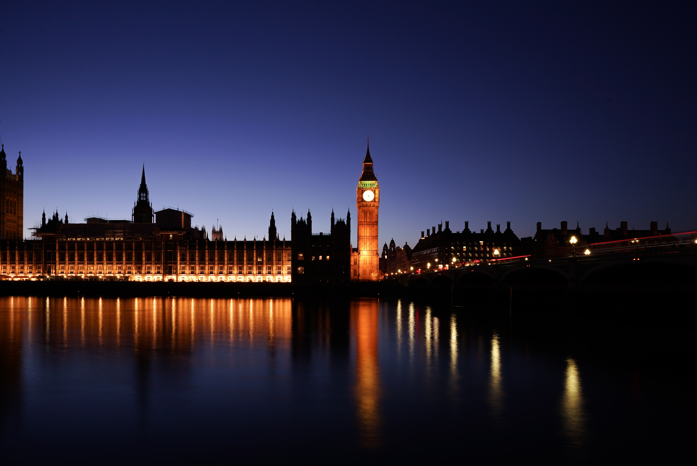
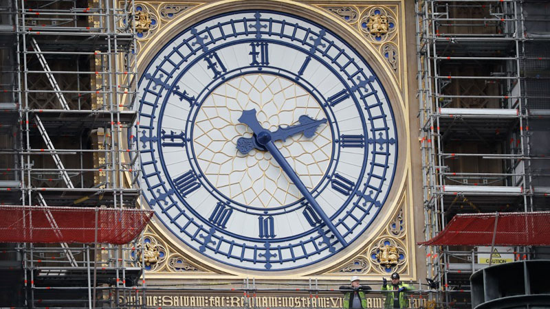
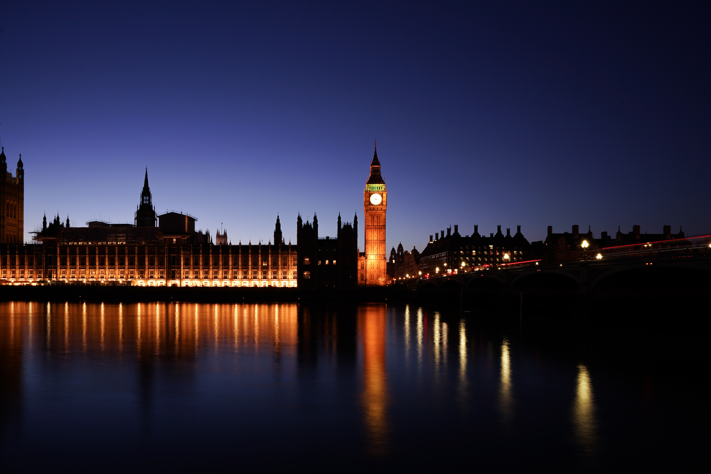
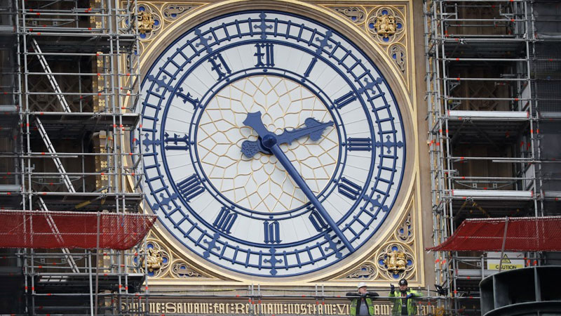
While it's possible to plan a trip to the UK without visiting London, it's certainly not to be advised, as the nation's sprawling capital boasts plenty of attractions to keep you busy. For those interested in learning more about the UK's rich history, one of the top things to do in London is visit the Tower of London. Located beside the spectacular Tower Bridge on the banks of the River Thames, this former palace and prison includes highlights such as the iconic 1,000-year-old White Tower, with its fascinating displays of armor and weaponry, and the Jewel House, home to the Crown Jewels. Fans of Britain's Royal Family will want to head to Buckingham Palace, London's Royal home since Queen Victoria's reign. Here, you can enjoy the colorful pomp of the Changing of the Guard or even take a tour of the Palace's State Rooms (be sure to book in advance as they're only open for a few weeks each year). The city's Whitehall Road area is another must, where you'll find Big Ben and the Parliament Buildings, as well as Westminster Abbey, scene of many a royal wedding. Another area to visit in London is South Kensington, home to the city's best museums, including the Victoria and Albert Museum and the Natural History Museum, as well as the famous Harrods department store. Also check out Trafalgar Square, home to iconicNelson's Column and the National Portrait Gallery.
London Eye

 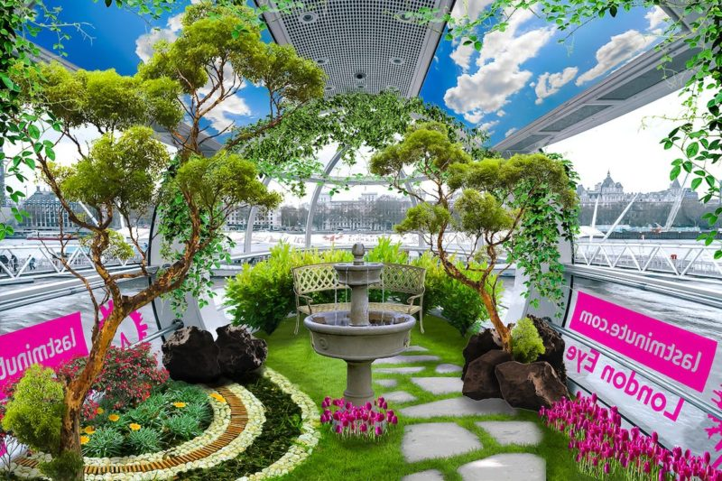
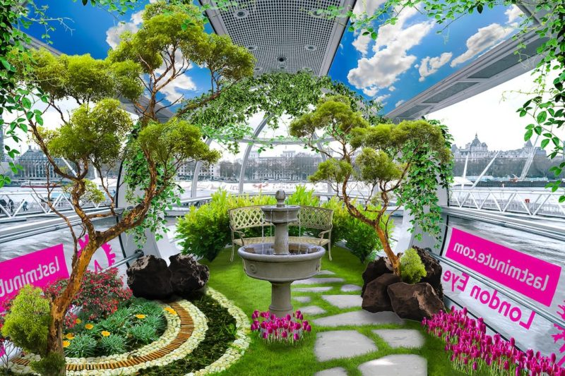
Think London and the one thing that pops into everyone’s head is this giant Ferris wheel. Located on the river Thames, this popular wheel offers a panoramic view of London and its horizons, which makes it a huge favourite among places to visit in UK for young couples. The wheel stands at almost 140 metres tall, with 32 capsules at its circumference which is how people reach on the top. The place acts like an observation deck and the ride here is deemed extremely romantic as well, making it one of the best places to visit in UK for couples.
The University Towns of Cambridge & Oxford
 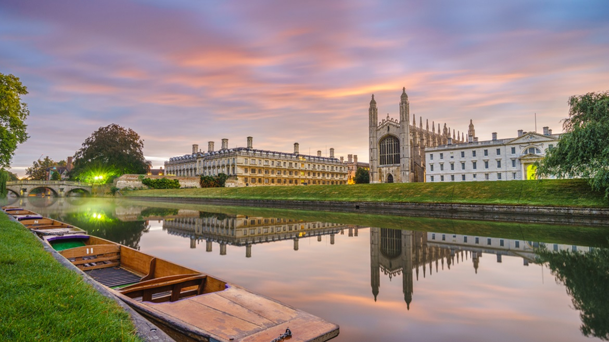
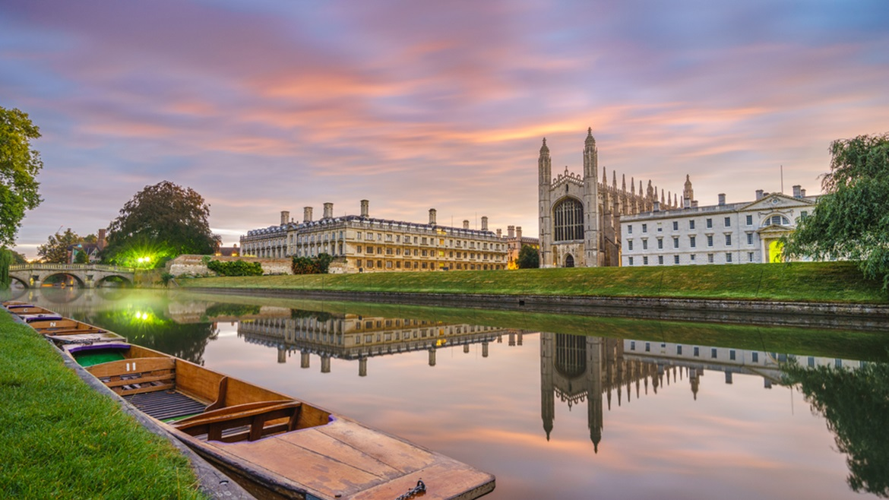
.jpg)

The UK has long been a center of learning, with two of its most famous university towns also ranking highly as tourist destinations. An easy commute north of London-and just 128 kilometers apart-Cambridge and Oxford have for centuries been rivals for the title as the country's top academic establishment, a rivalry celebrated during the famous rowing event, The Boat Race, which takes place each spring on the River Thames. Despite this generally good-spirited rivalry, each location offers plenty of attractions to make them worthwhile additions to your UK travel itinerary. Highlights of a visit to Cambridge include the chance to wander the UK's largest collection of preserved historic buildings, many of them located within an easy walk of Cambridge University's 31 colleges, the oldest of which was founded in 1284. In addition to touring the stunning college grounds (only a handful of the university's buildings offer tours), visitors to Cambridge should also take a punt along the River Cam, as well as explore the old town center. Oxford University's 38 colleges are equally attractive, each set around a quadrangle and several inner courtyards along with chapels, dining halls, libraries, and student accommodations (some offer unique tourist accommodation packages, too). Oxford highlights include the Carfax Tower, with its fine views over the city center, and the many fine old buildings of the town's High Street.
Tower Bridge London United Kingdom
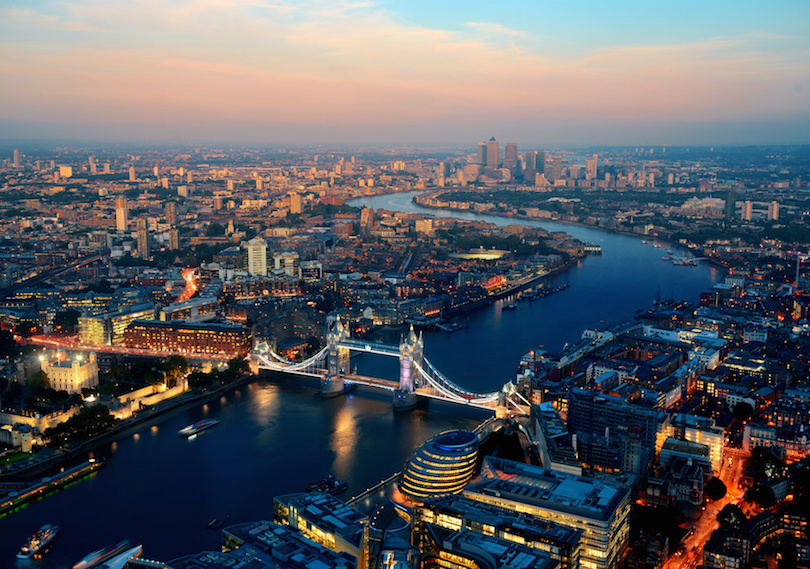.jpg)
.jpg) 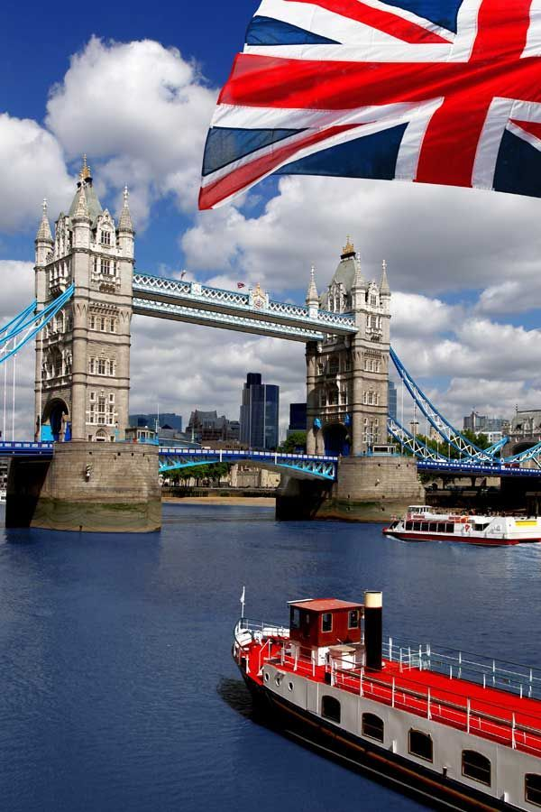
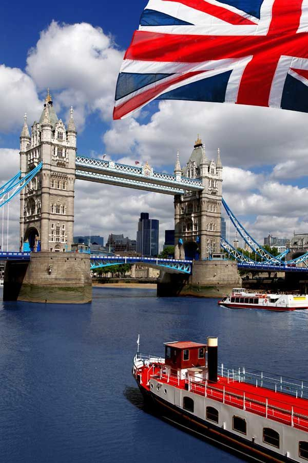
The bridge was completed in 1894. It is about 240 metres (800 feet) in length and provides an opening 76 metres (250 feet) wide. Its twin towers rise 61 metres (200 feet) above the Thames. Between the towers stretch a pair of glass-covered walkways that are popular among tourists. The walkways were originally designed to allow pedestrians to cross even while the bridge was raised, but they became hangouts for prostitutes and thieves and so were closed from 1909 to 1982. The Tower Bridge was operated by hydraulic pumps driven by steam until 1976, when electric motors were put into operation; the steam power system is still kept (in good repair) as a tourist display. Because of the reduction in shipping at the London Docklands, however, the leaves are now seldom raised.
Canterbury
.jpg)
.jpg)
Pay a visit to historic Canterbury in Kent, and you'll soon discover why this beautiful city continues to be such a draw for visitors to the UK. An easy hour's train ride from central London (or just minutes away from the EuroTunnel), Canterbury has been a draw for pilgrims for more than 1,500 years, ever since St. Augustine first started converting pagan Anglo Saxons to Christianity here in AD 597. The city's most famous attraction is Canterbury Cathedral, home of the Archbishop of Canterbury. Now a UNESCO World Heritage Site, this stunning cathedral offers plenty to see, from the intricately carved masonry of its exterior to its magnificent interior, a highlight of which is the beautiful choir with its statues of six English kings. Also of note are the exquisite Miracle Windows, dating from the 12th century and depicting scenes from the life of murdered Archbishop Thomas Becket. Afterwards, be sure to spend time wandering the pedestrianized area of Old City Canterbury with its many preserved, historic, timber-framed buildings, particularly along Mercery Lane. Other must-sees include the Canterbury Tales, a fascinating look at the life and times of famous English poet Geoffrey Chaucer (aka the "Father of English Literature"), and the excellent Canterbury Roman Museum, built around the remains of an original Roman townhouse and its unique mosaic.